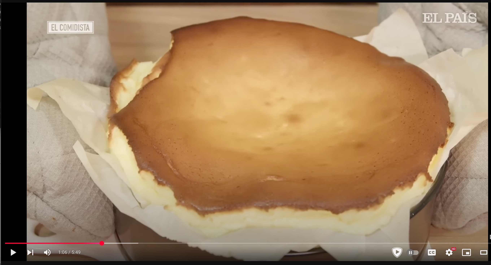

Ingredientes
Instrucciones
- Calentar el horno a 220ºC.
- Forrar un molde de 22 cm de diámetro con papel de horno humedecido.
- Batir y mezclar todos los ingredientes: comenzar con los huevos y el azúcar, y seguir con el queso,
la nata y la cucharada de harina.
- Verter en el molde y hornear a 210ºC durante 40 min (es posible que te sobre masa).
- Sacar la tarta del horno. Debe quedar temblorosa y cremosa. Después de un par de horas de reposo
estará lista.